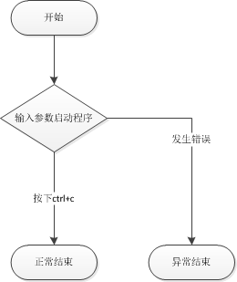
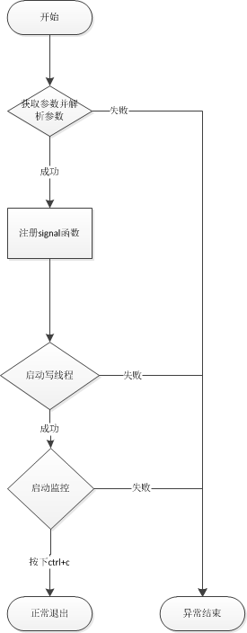
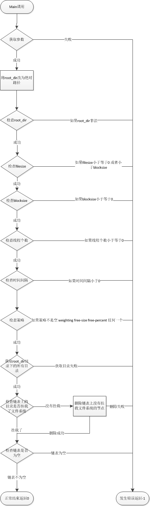
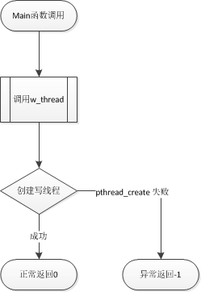
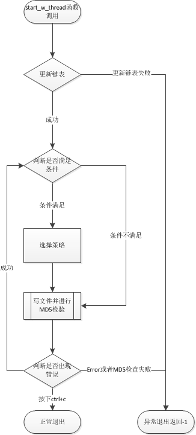
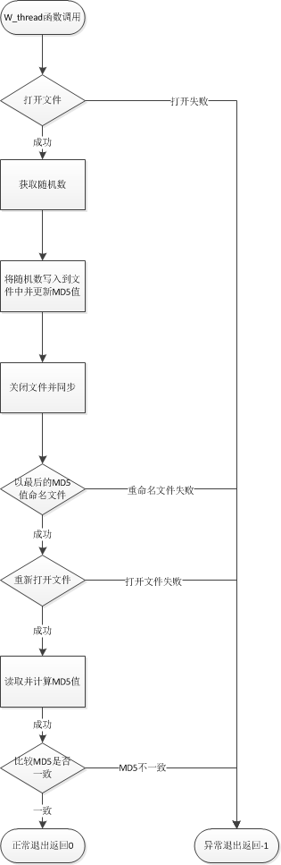
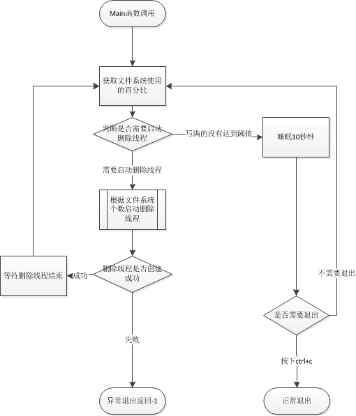
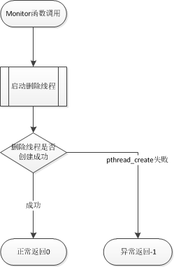
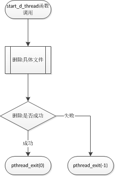
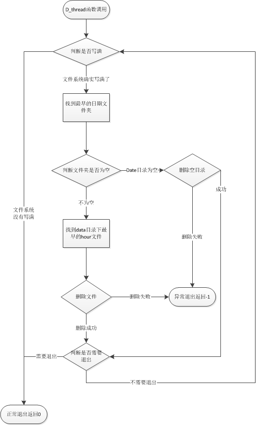

fs_write设计
Table of Contents
1 目标概述
1.1 适用环境
适用于挂载了NAS ipsan或nfs cifs文件系统的linux
1.2 需求概述
- 对针对不同的文件系统，进行正确性的检测。如果发生文件读写的不一致，则报错退出。
- 提供多种判断条件来进行写入的控制。包括：时间间隔、写入的大小等 ::可以扩展::
- 针对每种判断条件提供多种策略。包括：文件系统剩余大小，文件系统剩余百分比，权值 ::可以扩展::
- 提供定量自动删除的功能。如果使用空间达到阈值，进行自动的删除。 ::可以扩展::
- 提供正常退出的功能。
2 总体设计
2.1 总体概述
- parse_args读取输入的参数，并判断各个参数是否有效，判断root_dir是否为绝对路径， 如果为相对路径则转换为局对路径。将root_dir目录下挂载了文件系统的目录加到链表中， 并判断链表是否为空。
- 用信号SIG_INT判断是否是用户正常终止了程序，如果是用户正常终止，则写线程在写完 该次后退出。监控线程如果没有启动删除线程则直接退出，如果启动了删除线程，则终止删除 线程并退出。
- 根据用thread_n来启动n个写线程，如果启动写线程失败则推出。每个写线程，先判断一下是否 有需要满足的条件，目前的满足条件只有时间间隔，如果满足了条件则根据不同的策略来选择下一 次要写的文件系统，如果不满足则继续写上一次写的文件系统。会首先在挂载文件系统的目录下创建 名字为”线程号.tmp“的临时文件，向文件里面写随即数并计算md5值，写满filesize后，将临时 文件重命名为md5的值，并存放到相应的日期目录下的时间目录中。然后重新读取该文件并再次计算 md5值，比较2次md5是否相同，如果相同则进行下一次循环，如果不同则报错并退出。
- 启动监控线程，监控线程会定期检查文件系统是否写到了阈值（80%），如果到了阈值的文件系统占 总文件系统数的一半或一半以上，则针对每个文件系统启动一个删除线程并等待删除线程结束，如果 没有到总文件系统数的一半，则睡眠10秒钟，并判断是否需要正常退出，如果需要正常退出则退出， 否则循环以上步骤。删除线程会首先判断文件系统是否真需要删除，如果需要删除则找到最早的data 目录，检查该目录是否为空，如果目录为空则删除目录，如果目录不为空则找到目录下最早的hour目 录并删除最早的hour目录，删除完成后检查是否需要正常退出， 如果需要正常退出， 则退出。如果 不需要正常推出则判断是否仍然需要删除，即可用空间是否大于40%，如果不满足则重复上面的删除步 骤，否则退出。
2.2 流程图
2.2.1 总体流程

2.2.2 main函数流程图

2.2.3 parse_args函数流程图

2.2.4 写函数流程图
- start_w_thread函数流程图

- w_thread函数流程图

- write_file函数流程图

2.2.5 monitor函数流程图
- monitor函数流程图

- start_d_thread函数流程图

- d_thread函数流程图

- release_percent函数流程图

2.3 模块设计
- 参数分析模块，主要负责参数的获取和分析
- 线程模块，包含了写线程与删除线程的相关代码
- 监控模块，包含了用于删除文件的代码和获取文件系统当前状态的代码
- 自定义单向链表模块
2.4 接口设计
2.4.1 全局变量
- START_RELEASE 启动删除线程的阈值
- END_RELEASE 体制删除的阈值
- root_dir 由调用程序输入的文件系统挂载的根目录
2.4.2 接口函数
- 参数解析的接口
- print_help函数用于打印简短帮助
- print_usage函数用于打印使用说明
- print_dirsp函数用于调试时打印挂载文件系统的目录链表
- update_list函数用于更新挂载文件系统的目录的链表
- parse_args函数用于解析参数
- 线程模块的接口
- start_w_thread函数用于创建写线程
- start_d_thread函数用于创建删除线程
- 监控模块的接口
- release_percent函数用于删除文件
- moniter函数用于启动监控
- get_fs_dirs_by_percent用于为free-percent策略返回选择到的文件系统
- get_fs_dirs_by_size用于为free-size策略返回选择到的文件系统
- get_fs_dirs_by_weight用于为weighting策略返回选择到的文件系统
- get_fs_dirs_by_default用于为默认的策略返回选择到的文件系统
- 自定义链表模块的接口
- dirsp_list_empty检查链表是否为空
- dirsp_list_end返回链表的最后一项
- dirsp_list_have检查链表中是否有莫项
- dirsp_list_add在链表末尾添加某项
- dirsp_list_del在链表中删除某项
- dirsp_list_next获得指定项的下一个
2.5 数据结构设计
2.5.1 表示文件系统的结构
struct dirsname{ char name[256]; struct dirsname *next; unsigned int weight; //struct list *list; };
2.5.2 写线程的参数
struct thread_args{ long file_size; int block_size; int thread_num; int time_s; int thread_n; int policy; struct dirsname *dp; };
2.5.3 删除线程的参数
struct d_args{ struct dirsname *dp; int *flag; };
2.5.4 用于传递参数的结构
struct arg{ long file_size; int block_size; int thread_n; int time_s; int policy; struct dirsname *dirsp; }
3 需要修改的地方
- 打印帮助中，需要用户替换的变量用尖括号括起来
- 在查找是否挂载文件系统的函数中改用精确匹配
- 检查root_dir为空的情况
- 将检查root_dir的函数单独封装，检查函数要放到update_list函数之前
- 将检查切换条件的函数单独封装，方便以后添加修改
- 没有切换条件的时候一直读写
- 对weighting的修改放到choose_policy中
- write_file中不需要进入目录
- 将删除文件的函数封装为一个单独的函数
- 释放pids所占的内存
- 删除时如果停止了进程则直接退出不需要等删除完成